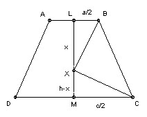

In the isosceles trapezoid ABCD (AB parallel to DC, and BC = AD), let AB = a, CD = c and let the perpendicular distance from A to CD be h. Show how to construct all points X on the axis of symmetry such that ∠BXC = ∠AXD = 90o. Find the distance of each such X from AB and from CD. What is the condition for such points to exist?
Solution

Since angle BXC = 90o, X lies on the circle diameter BC. In general this will intersect the axis of symmetry in 0, 1 or 2 points. By symmetry any points of intersection X will also lie on the circle diameter AD and so will have angle AXD = 90o also.
Let L be the midpoint of AB, and M the midpoint of CD. Let X lie on LM a distance x from L. We have LB = a/2, MC = c/2, and XM = h - x. The triangles LBX and MXC are similar, so 2x/a = c/(2(h-x)). Hence 4x2 - 4xh + ac = 0, so x = h/2 ± (√(h2 - ac) )/2.
There are 0, 1, 2 points according as h2 <, =, > ac.

Solutions are also available in: Samuel L Greitzer, International Mathematical Olympiads 1959-1977, MAA 1978, and in István Reiman, International Mathematical Olympiad 1959-1999, ISBN 189-8855-48-X.
© John Scholes
jscholes@kalva.demon.co.uk
17 Dec 2001
Last corrected/updated 24 Sep 2003